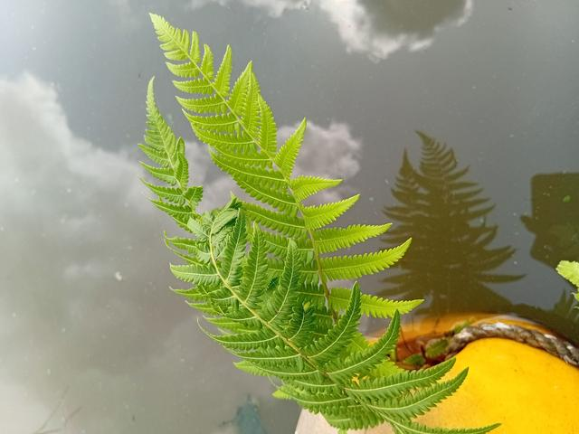
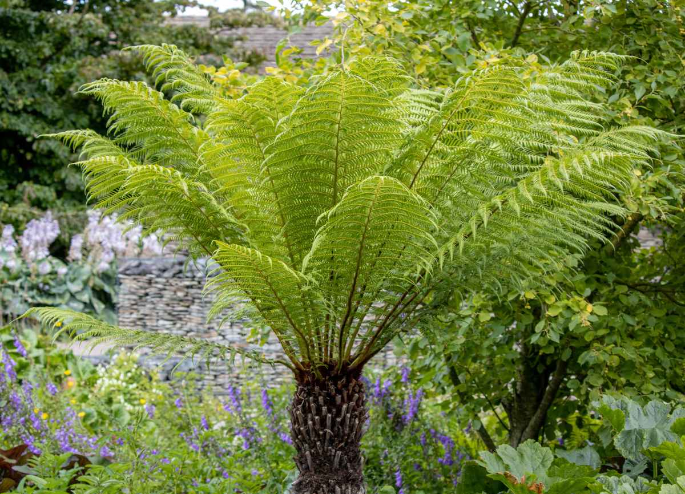
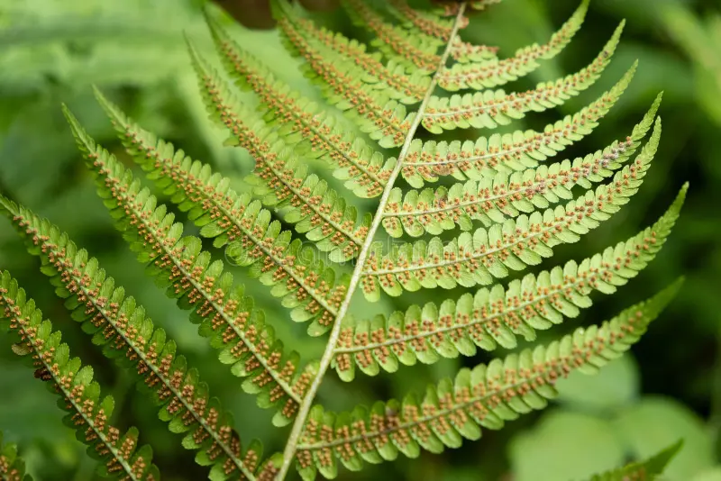
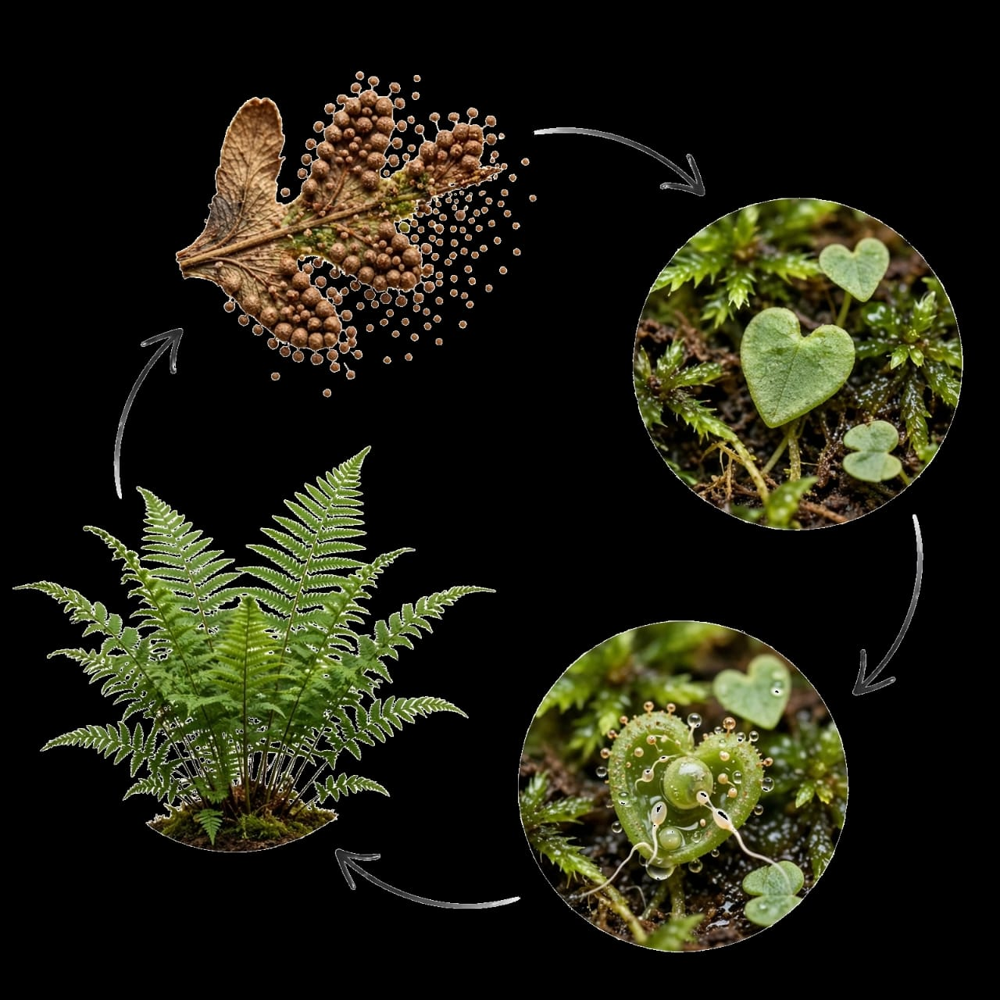

LES FOUGÈRES : LES PREMIERES PLANTES A VAISSEAUX
Les fougères (Ptéridophytes). Elles développent des racines et un système vasculaire (vaisseaux conducteurs) leur permettant de grandir en hauteur, mais se reproduisent encore par des spores




Appareil végétatif : vrais vaisseaux conducteurs (lignine), racines, tige (rhizome) et grandes feuilles (frondes).
Reproduction : par spores. L'eau reste nécessaire à la fécondation. Apparition vers 430 Ma, au Silurien.